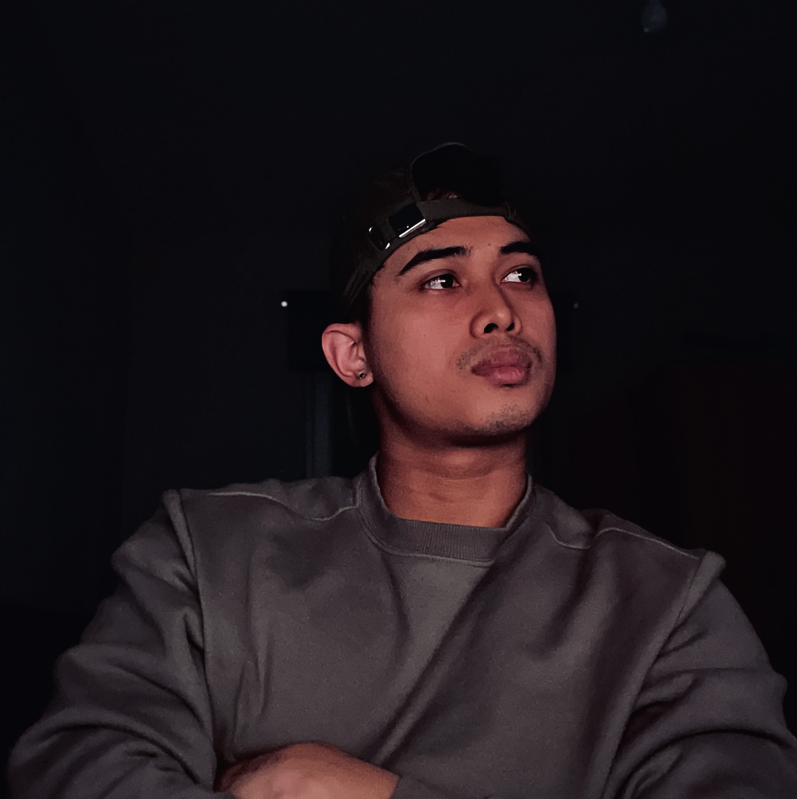

Born for tech
My love for technology has been with me since childhood. As a software, web, and mobile developer, I love creating innovative solutions that push the boundaries of what's possible.
I'm a
A passionate tech enthusiast from Cork, Ireland — turning ideas into digital reality. Software developer, web developer, and mobile developer with a love for continuous learning.

A journey shaped by curiosity, creativity, and an endless appetite for learning.
My love for technology has been with me since childhood. As a software, web, and mobile developer, I love creating innovative solutions that push the boundaries of what's possible.
Devices, computers, blockchain, artificial intelligence, and programming keep me on my toes. I thrive on the continuous learning and exploration these ever-evolving fields demand.
Photography is my window into storytelling — capturing moments that evoke emotion. Every frame is a chance to see the world from a different angle.
Music is another love of mine — I embrace every genre with open arms, except the very heavy metals. Its diversity mirrors my eclectic taste and openness to new experiences.
I prioritize a healthy lifestyle — exercising regularly and enjoying nutritious, delicious meals. What sets me apart is my love for cooking and experimenting with ingredients.
I've walked many paths — from kitchen prep to chef — and each role sharpened my adaptability. I bring a unique, versatile perspective to every project I undertake.
In my professional journey, I chose the path of a contractor to explore various work settings. From being a kitchen prep-up to trying my hand at being a chef, I appreciate the diversity of experiences that come with different job roles. This choice not only enhances my adaptability but also allows me to bring a unique perspective to every project I undertake.
In essence, I am a tech enthusiast, a creative at heart, a fitness advocate, a music lover, and a versatile professional always seeking new challenges. Life is an exciting journey, and I am here to embrace every twist and turn it brings.